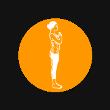
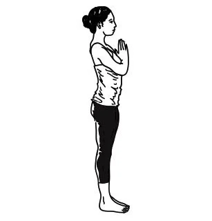

Surya Namaskar
by
Diwakar Sharma
Total Rounds
−
+
Total Time (Minutes)
−
+
Pace Profile
Progressive
Constant
Audio Mode (Spotify-Friendly)
Chimes (Spotify)
Voice (Spotify)
Created by
Diwakar Sharma

10
Get into position...
Round 1 / 12 •
Right
00:00 / 12:00 / 12:00
Prayer Pose (Pranamasana)
Exhale ⬇
Right Leg Back
Rds
−
12
+
Time
−
12.0m
+
↺
▶
🕉️ Namaste
Routine Complete!
Great dedication to your practice today.
12:00
Duration
12
Rounds
144
Poses
~46 kcal
Est. Burn
Complete Practice